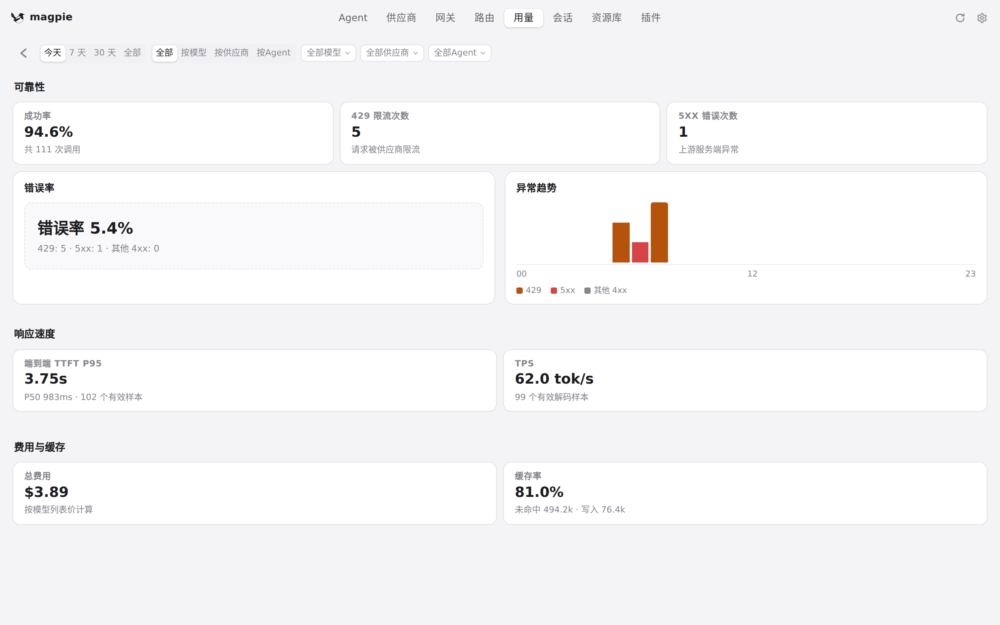
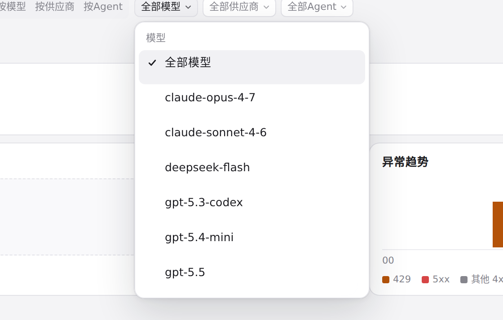
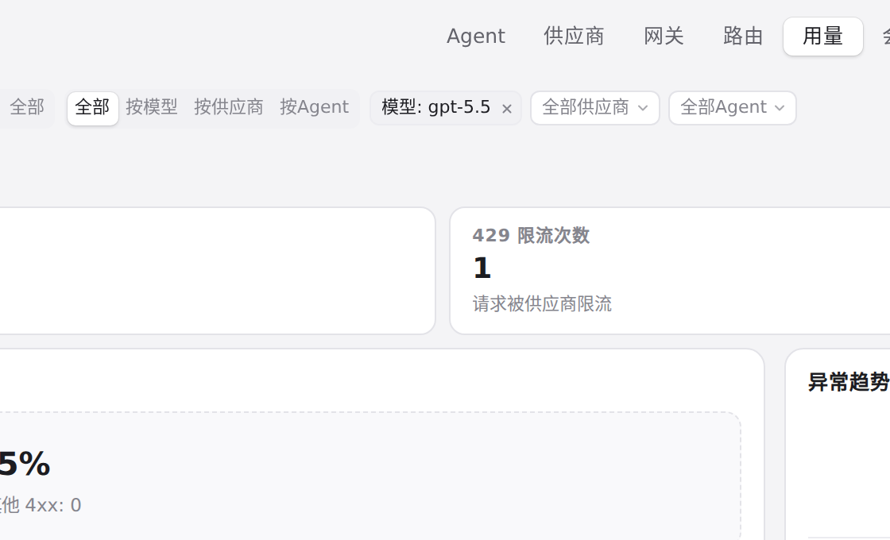
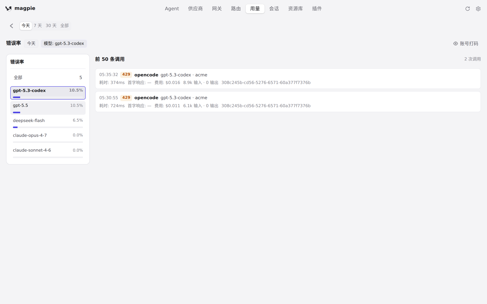
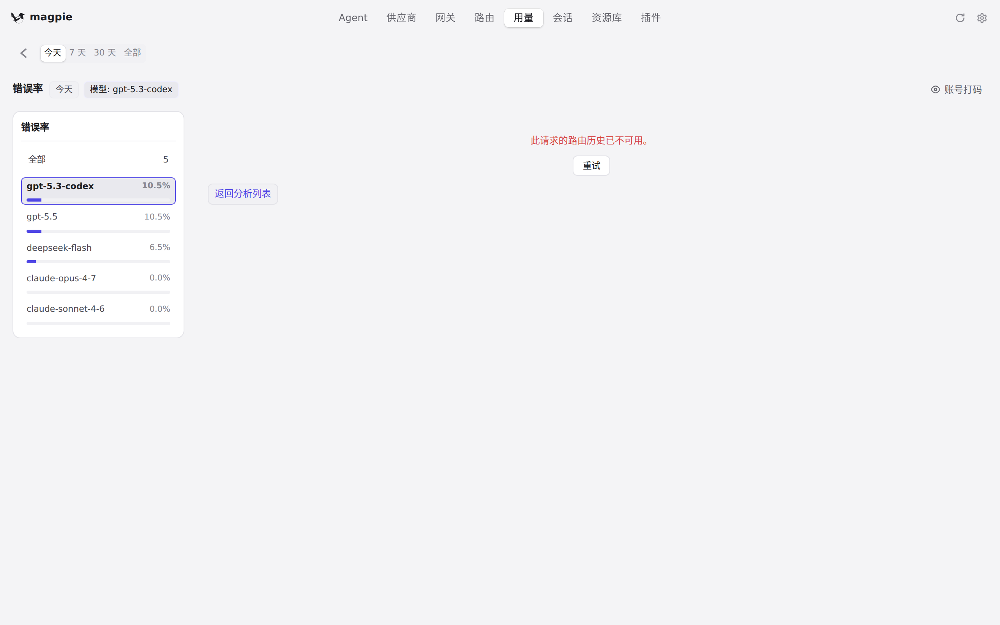
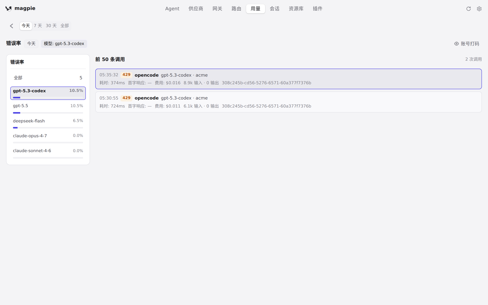
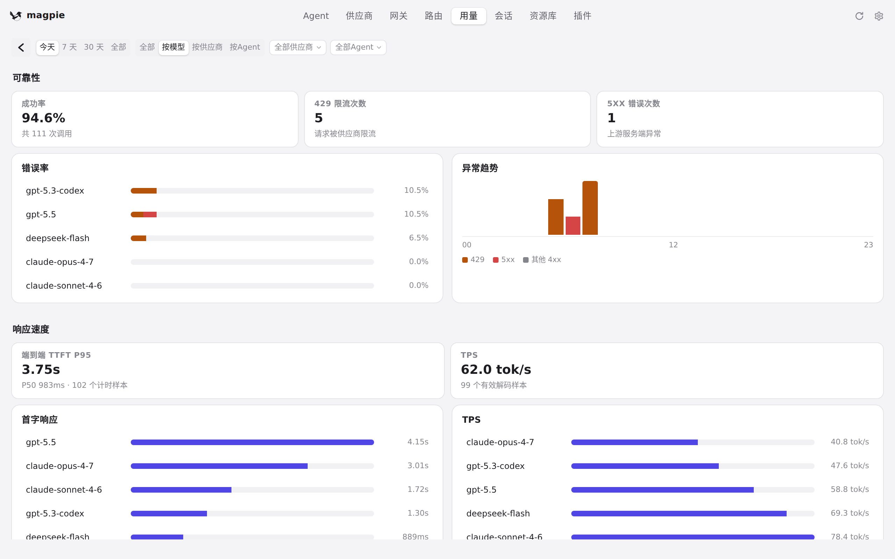

#704 界面预览
commit 4cb9851 · 回到 PR · 用量页顶部新增「分析」入口，打开独立的「质量与分析」看板（#view-analytics）：周期/维度分段与模型、供应商、Agent 筛选，可靠性（成功率、429/5xx、错误率、异常趋势）、响应速度（TTFT P95、TPS）、费用与缓存率的 KPI 与排行条；点排行行或 KPI 进入左右两栏下钻页（左侧紧凑排行、右侧前 50 条调用，点调用在右侧内嵌路由过程），下钻页标题行新增「隐藏账号」按钮，账号打码也覆盖分析页的文本、title 与 aria-label。
红线是鼠标走过的轨迹，红色圆环是一次点击；底部文字是这一步在做什么。空格暂停，← → 逐段查看。

分析看板与筛选 · 分析看板：周期、维度、筛选，以及可靠性、响应速度、费用与缓存

分析看板与筛选 · 模型筛选的候选值

分析看板与筛选 · 已选的模型筛选，看它上面的清空按钮
分析看板与筛选 · 「按模型」维度下的指标与排行

下钻页与调用的路由过程 · 下钻页：左侧该指标的排行，右侧前 50 条调用

下钻页与调用的路由过程 · 这条调用在右侧展开的请求过程
下钻页与调用的路由过程 · 打开这条调用后右侧显示的内容

下钻页与调用的路由过程 · 返回后的下钻页调用列表

下钻页与调用的路由过程 · 回到看板后的页面